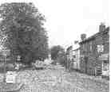

Conservation Area
You will now be redirected to the Conservation guide
'Designated by the Council 26.1.2000 following Public Consultation'
Chapter 1 Introduction
1.2 Purpose of Conservation Area Legislation
1.6 Effect of Conservation Area Designation
1.8 Definition of Special Character
Chapter 2 Appraisal
2.1 The Origins & Development of Wing
2.9 Landscape
2.13 Townscape Quality
2.16 Identity Areas
2.17 Aylesbury Road & Park Gate
2.26 Church Street & the area around All Saints Church
2.35 Vicarage Lane
2.41 High Street
Chapter 3 Designation
Chapter 4 Enhancement Opportunities
Bibliography and Acknowledgements
The information contained in this report is correct at the time of compilation, June 1999
© Aylesbury Vale District Council 2000
1.1 This report describes the criteria that have been used, and the judgements made, defining a particular Conservation Area boundary within Wing. It provides an appraisal which identifies, describes and illustrates the features and characteristics of the village's historic core that justify its designation as a Conservation Area. The criteria and appraisal have been used to define the Conservation Area boundary.
Purpose Of Conservation Area Legislation
1.2 Conservation Areas were first introduced in 1967, when it was found that the statutory protection, which existed for individual buildings, was failing to protect the overall character of cities, towns and villages.
1.3 There are already seventy Conservation Areas in Aylesbury Vale District, but the Local Planning Authority has a duty to review these from time to time, and to consider any additions or changes. As part of that process, the Council has considered designating a Conservation Area in Wing.
1.4 The Planning (Listed Buildings and Conservation Areas) Act 1990 defines a Conservation Area as "an area of special architectural or historic interest, the character or appearance of which it is desirable to preserve or enhance". Conservation Areas are normally centred on listed buildings, groups of buildings, open space or an historic street pattern. It is however the character of an area as a whole, rather than
individual buildings, that Conservation Area designation seeks to preserve or enhance.
1.5 Designating a Conservation Area does not remove or diminish other legislation that may apply within an area, including Listed Building protection, protection for Ancient Monuments and Tree Preservation Orders.
Effect of Conservation Area Designation
1.6 The principal outcome of Conservation Area designation is an official acknowledgement of special character. This will influence the way in which the Local Planning Authority drafts and applies its planning policies to the area. Any alterations or extensions to buildings within or adjacent to a Conservation Area are constrained by the need to respect the special characteristics identified in this document and policies contained in the local plan.
1.7 New development in, or adjacent to, a Conservation Area is similarly required to recognise both the special character and relevant policies contained in the local plan. Trees are given special protection, so that anyone wishing to carry out work on a tree over a certain size within a Conservation Area must give six weeks prior notice to the Local Authority Advertisements are strictly controlled within Conservation Areas and certain permitted development rights are removed by designation.
Definition of Special Character
1.8 It is important that Conservation Areas are seen to justify their status and that the concept is not devalued by the inclusion of areas lacking special interest The special interest of the Conservation Area is derived from one, or more, of the following: -
- Topographical and landform characteristics.
- Archaeological significance and potential of the area, including any scheduled ancient monuments.
- Architectural and historic quality, character, and coherence of the buildings, both listed and unlisted, and the contribution that they make to the special interest of the area.
- Character and hierarchy of spaces and townscape quality.
- Prevalent and traditional building materials.
- Contribution made by greens or green spaces, trees, hedges, and other natural or cultivated elements, to the character of the area.
- Prevailing, or former, uses within the area and their historic patronage, and the influence of these on the plan form and building types.
- Relationship of the built environment to landscape or open countryside, including definition of significant landmarks, vistas and panoramas, where appropriate.
- Extent of loss, intrusion or damage. i.e. the negative factors where change is to be encouraged.
- Existence of any neutral areas. (which neither enhances nor detracts).
1.9 It is these criteria that have been applied in defining the Conservation Area in Wing and in establishing the Conservation Area boundary
1.10 The following principles have also been applied in defining the boundary:
- Wherever possible the boundary follows features on the ground, which are clearly visible; for example walls, hedges, building frontages. This is to minimise confusion.
- where there are important buildings, the boundary includes their curtilage This is in part because the setting of a building can be as important as the building itself. There is also a practical reason. It ensures that the Conservation Area is not eroded, when land is sold, or sub divided.
- where landscape features, such as a row of trees or an important hedge defines a land boundar}; then the Conservation Area status is assumed to apply to features on both sides of the boundary It is not therefore necessary to define the width of a hedge or the span of a tree.
Chapter 2 Appraisal
The Origins & Development of Wing
2.1 Wing is situated seven miles to the north east of Aylesbury on the A418. Traditionally it stood on the main route between Oxford and Cambridge. It is situated on an elevated ridge of Portland Limestone in an area otherwise composed of Oxford clay To the immediate south of wing is Wing Park, an extensive area of permanent grassland that was enclosed by Sir Robert Dormer in the first half of 16th century.
2.2 Wing was settled in Anglo-Saxon times, All Saints Church probably dates from the 9th / 10th centuries.
Archaeological investigations indicate that a more extensive burial ground extended beyond the confines of the modern graveyard to the south and east of the church. The mound, shown on maps as Castle Hill, is the site of a Norman motte castle. The church and the Norman motte are archaeological sites of national importance, the latter is a scheduled ancient monument. There are remains of a deserted village to the south-east close to the site of the Dormer's House.
2.3 Wing is of agricultural origin, in the 18th / 19th centuries the village was associated with straw plaiting. Almost every Buckinghamshire parish had water or a windmill in the mediaeval period, Wing had both, and the last mill was on the site of the garage in Church Street, powered by fossil fuel rather than water or wind. There was a brickworks at Littleworth (established in 1859).
2.4 Agriculture is still significant in and around Wing today The clay and loam soils produce high quality grassland for dairy cattle grazing. There is also hay cropping for the feeding of livestock and some arable crops, principally, wheat and barley Over the last century there has been a gradual move away from agriculture. Employment on nearby farms and the estates at Ascott and Mentmore has been supplemented by the availability of work in the towns of Aylesbury; Leighton Buzzard and Bletchley
2.5 Jeffrey's Map, engraved in 1770, indicates Wing with a north-south alignment that corresponds to pre-medieval routeways, south to the Icknield Way. One can notice this axis from Park Gate in the south to Castle Hill in the north. It appears that as time passed, east-west traffic increased in prominence leaving the High Street on a secondary route. Interestingly Cheddington, Stewkley and Mursley have a similar High Street alignment.
Reproduced with permission of Buckinghamshire Archaeological Society
2.6 The OS map of 1879, shows little development to the east of the High Street and almost no development along the Leighton and Stewkley Roads. At this time, the viliage still conformed to its ancient layout, consisting primarily of the High Street, Church Street and Vicarage Lane.
' reproduced from the Ordnance Survey Map 1879 - 25" to 1 mile, 1st edition'
2.7 There are a number of estate houses in Wing associated with the Rosebery Family at Mentmore and the Rothschild family at Ascott. These Rosebery houses are distinct and of superior quality being of a high specification and architect designed. Although the architectural styles are not venacular, they are quintessentially English and now associated with Wing.
2.8 Baron Leopold Rothschild (1845-1917) bought Ascott House (to the east of Wing) in 1874 and in 1878 the two families became related when Hannah (Leopold's cousin) married the 5th Earl of Rosebery

2.9 Approaches from the south and south-west reveal little of Wing due to the lie of the land. Wing occupies a position on higher land at a point where the ground takes on a gentle, almost plateau like, level. The village is almost entirely screened when seen from lower ground. Wing is also notable for scenic views out of the older part of the village, particularly to the south and west.
2.10 Trees and the landscape setting make a major contribution to the character of Wing. They help to bind together the historic elements of the village, which in places, have become separated as a result of recent development Trees also serve to integrate the village with the surrounding countryside. Large trees extend into Wing itself. There are few locations in the older part of the village where one is not aware of trees; these trees emphasise Wing's rural quality
| View along Church Walk which opens into Vicarage Lane with views over countryside. | Diamond pattern clay paviors in Church Street. | Traditional metal railings found in the older part of Wing. |
2.11 Boundaries, surfaces and street furniture contribute to special character. Hedges help maintain Wing's rural association, these frequently include holly as a major component. Few traditional paving materials have survived. However; there are examples of stone curbs and a stretch of blue brick paving. Natural stone kerbs and blue diamond patterned paviors help maintain local distinctiveness.
2.12 Metal paling and estate fences reinforce Wing's rural identity, wooden paling fences and gates have a similar effect and walls of local brick with half-round or triangular section copings are common in the village.
2.13 The focus of Wing is the Saxon church, the village to the east of the church is domestic in scale with a vestige of vernacular buildings, some of which are listed. Those buildings that contribute to the character; quality and interest of Wing are typically sited at back pavement or behind visually strong curtilage boundaries. They are typically buildings of relatively narrow span depths, steep pitched roofs and full gables, with wall areas that substantially dominate openings, linear form and uncomplicated elevations.
2.14 The second key townscape element is materials. The village is characteristically built in Limestone and mellow red brick, in Flemish or alternative solid wall brick bonds, with plain clay tile roofs. Roof pitches are generally between 400 and 600 and window openings are of vertical proportions, either as sashes or divided into casements. Architectural features include corbelled eaves, chimneys, plain gabled roofs, roof slopes without openings and diaper pattern brickwork.
2.15 Scale, enclosure and building line are important characteristics. Buildings are of two floors, roofs are not used as a third level, and buildings generally promote enclosure, either in themselves or by strong boundary treatments. Throughout much of the area, building lines are crucially significant in defining townscape character.
The junction of High Street and Vicarage Lane:
A green space enclosed by buildings of domestic scale and traditional appearance.
2 16 There are four areas of cohesive townscape, which taken together; represent the historic core of the village. These are described in the following sections.

Plan indicating the four interlocking identity areas within the Conservation Area
2.17 The historic core of the village is approached from the south-west, along Aylesbury Road, which leads into the High Street at Park Gate. Landscape plays an important role in defining the character of this part of the village. On entering Wing from the south-west, mature trees on the north-west side of the road within the grounds of Cottesloe School are visually important, in particular a group of four Chestnuts and a Wellingtonia. Further along is a second Wellingtonia, together with a mixed species hedgerow and one Horse Chestnut. On the corner of Church Street and Aylesbury Road are a group of Yew trees and a Cedar

2.18 The south side of Aylesbury Road is also defined, at this point, by mature trees and hedges, which partially screen and soften the buildings. Some notable trees are mature Lime, Sycamore and Ash with group plantings of several Birch trees.
2.19 From this tightly enclosed approach into the Conservation Area, Aylesbury Road becomes less contained at its junction with Church street Here a substantial raised green verge is responsible for a loss of enclosure. Thereafter, building lines converge, coming closer to Aylesbury Road where they form a fight pinch point immediately before the elbow bend at Park Gate Corner
2.20 Along this stretch of Aylesbury Road, travelling towards Park Gate corner; there is a mixture of mature trees that are visually prominent Within the grounds of 11 Aylesbury Road are large dominant trees tat have become an integral feature of the southern edge of the village, especially the mature Lime trees that front the recreation ground terminating the view looking east.
2.21 The buildings facing Aylesbury Road on its southern side are especially important to the character of the Conservation Area. Much of the area's special interest is in the harmonious group composition of this facade and its well preserved period features, including chimneys and the detail of openings. The quality and type of brickwork and tile are significant unifying features, many original windows and doorways survive.
2.22 The former Dormer's Hospital is an especially attractive and prominently situated building comprising a range of stone rubble almshouses originally constructed in 1519 but substantially altered in the 19th century The timber-framed house immediately behind (20 Aylesbury Road) and the houses opposite make this a unique and outstanding part of Wing.
2.23 There are a number of largely unaltered, architecturally attractive and prominent buildings of various periods that are given cohesion through the use of natural materials these include local brick, limestone, plain clay tiles and natural slate. There is sufficient space between buildings to allow the development of substantial mature trees and to provide views of trees behind. Boundaries are clearly defined in local brick, paling fence or metal railings, often supplemented by verdant hedging.
2.24 Not withstanding the busy A418, which is a major detractor to the visual and environmental quality of the area, vehicular access points and parked vehicles do not dominate frontages, along the Aylesbury Road towards Park Gate corner. Many original features survive on the buildings and roof slopes are uninterrupted by inserted dormers or roof-lights.
2.25 The key buildings in this area are:
Note: the legends for 7-9 Aylesbury Road and 10 Park Gate have been transposed in error - web master 12th October 2001
Other important features in this area are shown on the map at the back of this document
Church Street & the area around All Saints Church
2.26 This area comprises the approach to All Saints, the churchyard and the frontages of properties in Church Street.
2.27 Church Street has a crescent configuration, linking Aylesbury Road with the High Street Despite peak hour traffic, the street has a distinctly rural appearance being a relatively quiet backwater in comparison with the A418. In the southern section of Church Street, this is due to its narrow width and strong hedge lined boundaries. The scattered arrangement of the buildings, domestic scale and the historic character of the houses also promote a rural quality

2 28 The view from the High Street into Church Street provides an attractive glimpse of the triangular space forward of the entrance to All Saints Church. The Church is seen together with the pleasing end elevation of 12 Church Street, the adjacent trees and the Horse Chestnut trees immediately to the south of
the Lych gate. This section of Church Street, from the High Street to the Lych gate, has unfortunately lost some of its
original character Little remains of the last operational Mill, which once stood on the south side of the street. A garage
forecourt now breaks the continuity of this frontage. The slate roofed, red brick two-storey Victorian cottages (original
construction 1860) loosely define the street. Some of these properties have lost their original door and window details and original roof materials but those that retain their original features demonstrate the benefit of reinstatement
Variety and interest contributes to the character of the Conservation Area 1 - 21 Church Street
2.29 Opposite the Lych gate (1920) is an architecturally mannered group of estate houses that establish an exemplary reference for the standard that new development might achieve in the proposed Conservation Area. This group of Rosebery houses (1869) is rural in character They are well proportioned in both overall design and in the detailing of their features, variety to the roofline is provided by the use of both hipped and gabled dormers. The walls are ornamented with diapered brickwork The front gardens are enclosed with fencing, walls and hedges.
| Diaper pattern brickwork on the Rosebery Estate cottages, Church Street |
2.30 To the south, is a further terrace (New Zealand Gardens) in a similar style, set back behind modern houses which have been built on what once was its front curtilage. This terrace is taller than the estate houses fronting Church Street, it is a fine and imposing group which has been extended to the north
A key landmark in the Wing Conservation Area. All Saints Church, Wing with its beautiful and well preserved Saxon Apse of 10th century date.
2.31 Beyond the Lych gate, is All Saints Church. Although of Saxon origin, the church was extended in the 13th 14th and 15th centuries. The church is situated on the west edge of the village over-looking the countryside. It is undoubtedly the most significant structures in Wing, built of local stone with its castellated tower; it is a landmark seen from the surrounding area or across the village.
2.32 The churchyard is a tranquil place, which slopes westward, providing views across the surrounding countryside. It is enclosed by hedges along its north and south boundaries, and contains a number of mature trees, which enhance the setting of the church. The railings around the church contribute to its setting.
2.33 Church Walk is lined with a row of five mature Lime trees. These trees are visible from the High Street and can be glimpsed between buildings. The Old Vicarage to the north, located among dense tree planting, forms an attractive backdrop to the church. It is separated from the churchyard by a mature hedge of predominantly Holly
2.34 The key buildings within this area are:
2.35 The Lane makes a pleasant and interesting transition between the historic core of the village, and its rural surroundings. From the triangular space adjacent to the High Street, with its focal tree group, the Lane dips, narrows and gently curves. The eye is lead into the lane by the terraced frontage of Victorian properties that form the south side of the triangular space. Although some have, over the years, lost their original materials and details, these could be easily reinstated. On the south side of the lane, the buildings front the pavement, but, in contrast, on the north side, there are no buildings between No.10 and Vicarage Lodge. The land falls away, allowing distant views of the surrounding countryside. The views from Vicarage Lane across countryside to the north and west are especially important, partly due to the commanding vantage point and partly due to the attractive nature of the landscape.

2.36 The special character of the Lane lies in the modest yet distinguished character of the houses, the relationship of the houses to the Lane, boundary treatments and views of both trees and countryside. Although much of the original detail has been lost on the terrace on the south of the triangular space, most of the other houses retain their original detail. Wantage House (1843), the half-timbered old English style Rothschild houses (1895), the stucco terrace (c.1860), No 17 (c.1840) and No 18 (c.1900) are all individually fine, and generally unaltered examples of harmonious Victorian Villas.
2.37 The houses in the central part of the Lane are set into a bank of rising land from which they command views of countryside to the north. The undeveloped section of Vicarage Lane provides a particularly attractive interface between village and countryside. This is all the more dramatic for being unexpected when leaving the relatively tight enclosure of the triangular space. Open views of countryside are similarly dramatic and pleasurable as seen from Church Walk
2.38 The group of trees within the triangular space is especially important for their value in bringing a feel of the countryside into a built up part of the village. The trees and shrubs in the vicinity of Vicarage Lodge together with those beyond provide a pleasant vista as seen from Vicarage Lane and the hedgerow along the north boundary forms a corridor of vegetation between the two.
2.39 The timber framed Vicarage Lodge set amongst dense and mature trees, terminates the view down the Lane. The Lane continues as a private drive giving glimpses of the Old Vicarage, which lies beyond. There are a group of large trees on the northern boundary of Vicarage Lodge. These Oak and Pine trees are visible for almost the entire length of Vicarage Lane and from the adjacent part of the High Street The three lime trees situated on the island at this junction are an important feature in the village centre.
2.40 The key buildings in this area are -
Other important features in this area are shown on the map at the back of this document.
2.41 The High Street is a principal thoroughfare. It is essentially a channel, relatively narrow for the most part, broadening at its junctions with Vicarage Lane, Church Street and Prospect Place. Important features are its containment, subtle curvature and the view of trees and countryside at either end. There are a number of important historic buildings along its length, although many of the frontages are interspersed with recent development.

2.42 Starting at the South end of the High Street, the trees that edge the recreation ground are a major townscape feature. These trees, together with the view south, offer a marked contrast with the relatively confined stretch of the High Street between Leighton Road and Prospect Place.
 The view south from the High Street
2.43 The south part of the High Street contains two especially attractive buildings, a timber framed cottage, (3 High Street), and the Queen's Head. These give an indication of the High Street's original character when it was the main route through Wing, as opposed to the predominant east-west traffic of today
2.44 The Cock Inn Public House dominates the High Street in the vicinity of its junction with Prospect Place and Church Street The terrace properties facing Prospect Place and the return facade into Church Street are given prominence by their location relative to the configuration of road junctions and alignment. The section of High Street between Church Street and Vicarage Lane contains a mixture of modern and older buildings, the newer terrace would be improved by curtilage enclosure. Some of the older buildings have the potential of greater contribution to the area's special character through sensitive restoration of their features.
2.45 The road broadens at Vicarage Lane. Here, Wantage House is visually important because it turns the comer from Vicarage Lane to the High Street The house has a well-screened boundary into the High Street that masks more recent development beyond. To the rear of Wantage House, former outbuildings are now converted to houses; one of these, 53 High Street, was used as a chapel at one period. Although the original character of these former outbuildings k largely masked through conversion they are important in relation to the adjacent Scheduled Ancient Monument site at Castle Hill. At the northern end of the High Street, is a range of Listed Buildings, comprising nos. 54-60. These are set at right angles to the street, and form a visual stop to views out
2.46 The High Street is visually the weakest of the four identity areas due to the amount of redevelopment that has taken place and the adverse impact of traffic and parked vehicles in its restricted space. Nevertheless, the High Street constitutes the wider setting of three key listed buildings, one or two of which are in view throughout its length. These buildings are the Queens Head Hotel, the Cock Inn and 54-60 High Street at the northern extremity The shape and appearance of these buildings set the tone for any redevelopment proposals, note their steep pitched roofs in plain handmade clay tiles, and with regard to the Cock Inn, the extent to which the roof is a feature of the facade.
2.47 The subtle curvature of the High Street is also of interest, the lower section between the recreation ground and vicarage Lane benefits from views of tree groups to north and south. The upper section gains from views as it abruptly opens onto countryside.
2.48 The key buildings within this area are -
3.1The Appraisal & Designation Map, identifies features important to the character of the Conservation Area. Building groups, listed buildings, the important townscape views and green areas are shown. The written description and map together describe and show where development control policies will apply
3.2 The map, defines the extent of the area which is regarded as possessing those quali6es of townscape and architectural &aracter or of historic interest which the designation is proposed to protect.
3.3 The area designated is not a 'village envelope' or limit to development The boundary shown will not necessarily preclude development beyond the Conservation Area; conversely because some open land is included in the Conservation Area does not signify that permission for its development will be forthcoming.
3.4 This document deals with the designation of the Conservation Area. For information the Appendix contains a list of conservation policies which apply specifically within or adjacent to the Conservation Area. These policies are extracts taken from the relevant local plan/plans for that area; other policies may also apply to particular development proposals eg. policies relating to car parking, landscaping or Buildings of Special Architectural or Historic Interest. These will be found in the Local Plan quoted.
Chapter 4 Enhancement Opportunities
4.1 The green, to the north of Aylesbury Road, would benefit from planting to continue endosure and to complement the substantial trees and hedges to the west and opposite
4.2 The introduction of one or more trees at the Prospect Road junction would improve the appearance of this part of the High Street
4.3 A recent housing development on the High Street to the north of its junction with Church Street could be improved by the introduction of railings to enclose private gardens. A suitable tree would enhance the junction of High Street and Church Street.
4.4 Less conspicuous lamp columns would improve the appearance of the older part of Wing. Plain wooden bollards at the north end of Church Walk would better suit its rural character Unattractive signs could be redesigned to better complement the Conservation Area.
4.5 Improved provision of archaeological and historical interpretation information and a management plan for the Norman motre.
Conservation Policy
The current local plan covering Wing is the Aylesbury Vale (Rural Areas) Local Plan (RALP) adopted in July 1995. A new local plan, the Aylesbury Vale District Local Plan (AVDLP), has recently been placed on deposit and objections to it have been considered by the Council. The policies in AVDLP not subject of substantial objection now have significant weight
The full list of policies which apply within conservation areas, both from RALP and those which have significant weight in AVDLP is provided below
Policies from Aylesbury Vale (Rural Areas) Local Plan
RCD.13 Within designated Conservation Areas new development, including extensions, will only be permitted if it respects the existing character of the area, including existing uses, layout, features, design and scale of the buildings and their surroundings, and it would make a positive and appropriate contribution to the appearance of the
area.
RCD.15 Before consent is granted for the demolition of any building within a Conservation Area, the Council will wish to be generally satisfied as to proposals for the subsequent development or other use of the site.
RCD.16 The siting of new buildings in and, where appropriate, adjacent to a Conservation Area should generally b/low the pattern established by the old and in filling or back/and development will be strictly controlled. A site should not be developed if it would result in the loss of an open area across which uninterrupted public views into or out of the Conservation Area are available, or which contributes significantly to the setting of individual or groups of buildings.
RCD.17 Proposals for the alteration or extension o fany budding in and, where appropriate adjacent to a Conservation Area, where such works are appropriate to their retention and can be effected without loss of the intrinsic quality of the buildings concerned, will be considered favourably providing there are no other overriding objections.
RCD.18 Within and, where appropriate, adjacent to a Conservation Area the Council will seek to ensure that the scale and character of individual buildings are respected when material alterations are carried out, such as the insertion, remodelling and amalgamation of shop fronts.
RCD.19 The Council will seek to ensure the retention of important trees within Conservation Areas and, in the event that any are threatened, it will have regard to the health and stability of the trees and their likely future life, and their existing and likely future contribution to public amenity. where consent is granted for the removal of existing trees important to the character of a Conservation Area, the Council will impose conditions to require replacements, normally using locally appropriate native species, in the next planting season and to ensure their subsequent maintenance.
RCD.22 in considering proposals for new development or changes of use within and, where appropriate, adjacent to a Conservation Area, the Council will not grant permission ifit is likely to generate a material increase in and/or a type of vehicular traffic or parking alien and detrimental to a Conservation Area.
Policies from Aylesbury Vale District Local Plan
GP 78 The Council expects special consideration to be given by developers, statutory undertakers and other operators to the scale and finished appearance of all engineering works, plant or buildings including surfaces and street furniture, carried out within and adjacent to conservation areas. The use of overhead cables by statutory undertakers should be avoided and all new services laid underground unless there are exceptional circumstances that require otherwise.
GP 79 The demolition of any building of individual merit or group value within a conservation area will not be permitted unless the Council is satisfied that the building cannot reasonably be retained. Before consent is granted for the demolition of any building the Council will wish to be satisfied as to proposals for the subsequent development or other use of the site.
GP81 In, and where appropriate adjacent to, conservation areas, fascia and projecting signs should relate well in scale, character; position and materials to the building to which they are affixed and the street scene. illumination of signs should be kept to the minimum and, where necessary achieved by external lighting.
| Betjerman and Piper J | 1981 | Murrays' Buckinghamshire Architectural Guide | Murray John, London |
| Lipscombe G | 1831 | The History and Antiquities of the County off Buckingham | J&WRobins |
| Reed M | 1993 | A History of Buckinghamshire | Phillimore,Chichester |
| DoE/DETR | 1994 | PPG15 Planning and the Historic Environment | HMSO |
| English Heritage | 1997 | Conservation Area Appraisals | EH |
| English Heritage | 1995 | Conservation Area Practice | EH |
Acknowledgement
Iris Rosier and her colleagues in Wing Historic Group
Susan Gole of the International Map Collectors Society
Julia Wise of Buckinghamshire County Council's Archaeological Services
Buckinghamshire Archaeological Society


last update 17th March 2000